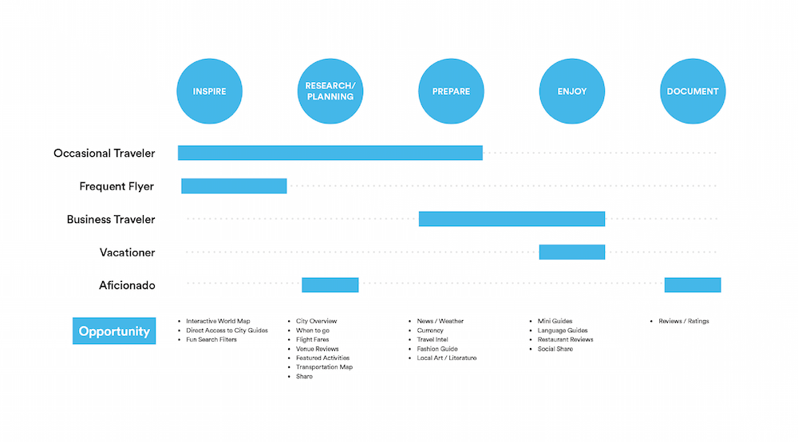
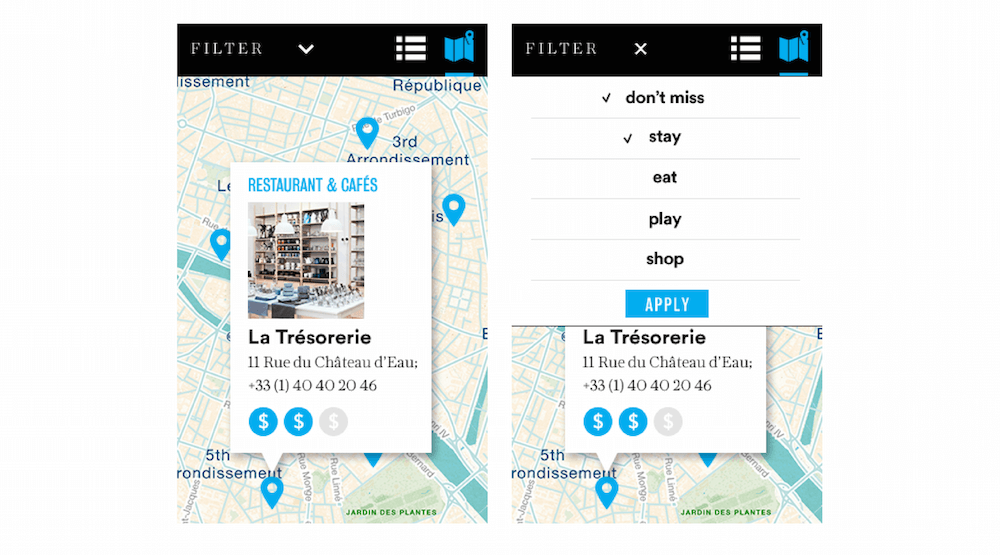
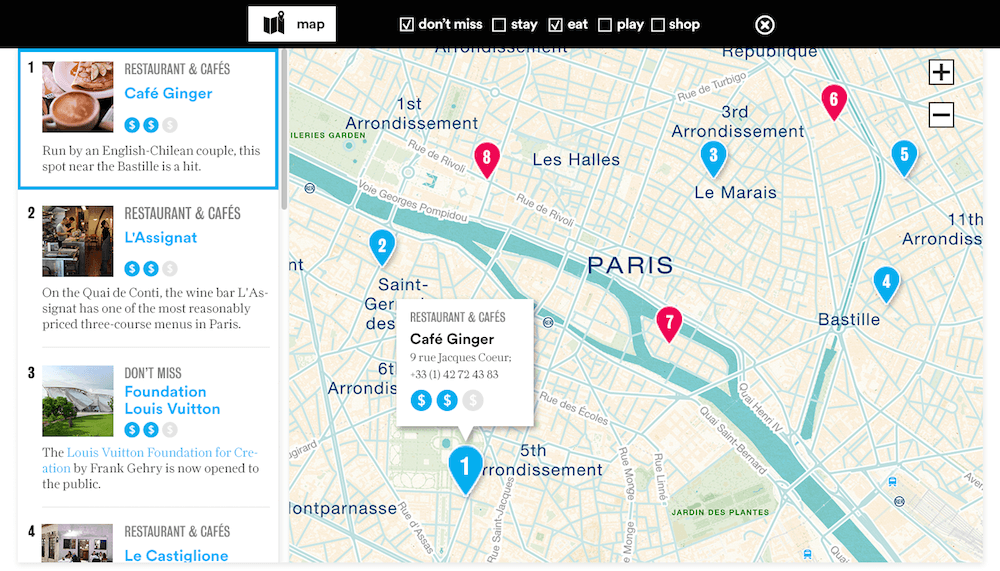
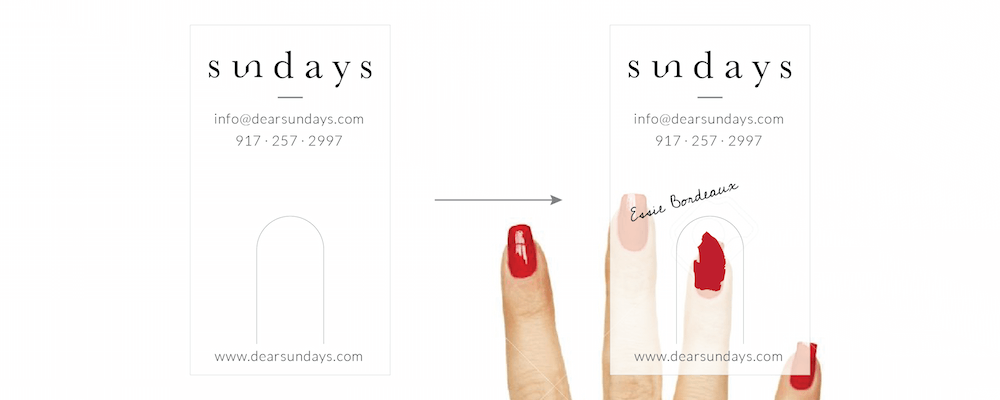
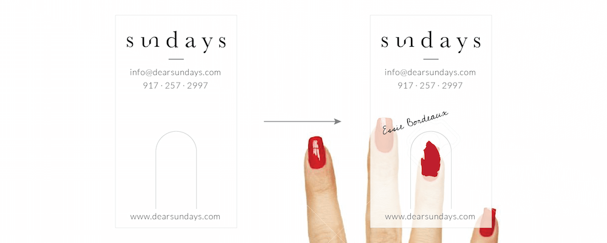
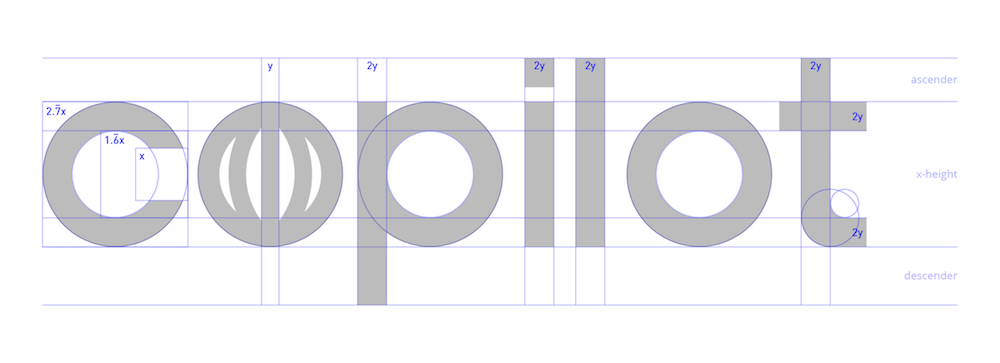

YA-TING WANG |
汪亞婷
YA-TING WANG |
At Condé Nast, I design the interaction and interface for our in-house CMS called Copilot.
Key Role: Defined problems and opportunities through user interviews, built quick prototypes to help the team decide on a MVP, and ran user testings to validate hypotheses.
Please inquire to see more work on Copilot
Introducing the Condé Nast Traveler city guides with connoisseur curated itineries.
Key Role: From defining users, building wireframes, to designing visuals with the brand visual language.
View Live
We collected site visitors' demographics and composed them into stories for personas.

Defining traveling stages and opportunities
Early stage wireframe and visual mockup

The map was a major part of the city guide; we made sure the interaction was simple and clear for both mobile and desktop.
 Redesigning a website to empower editors and create more engaging experiences.
The redesign has increased AD's digital audience by 67% along with editorial strategy.
View LiveDefining new opportunities through stakeholder interviews and user analytics

Card sorting exercise with the editorial team to re-organize site structure

The homepage was designed to allow editorial package experience and a clean layout to enable engaging photographies.

Designed and style-coded the company's blog site for the engineering team.
View Live
I presented 3 iterations to the engineering team, these are the not chosen ones.


To celebrate the very first blog post written by our VP of Engineering, I created this gif for his post.

Installations and furniture I designed while at Slade Architecture.

Designed and oversaw the production for the DIFFA installation at the Architectural Digest Design Show. In collaboration with Hansgrohe | AXOR.

Wallpaper pattern made up of bathroom fixtures from AXOR.

Fixture design for a women and childen's clothing retail shop in Long Island City. From sketches to realization.


I ♥ wood


I enjoy creating simple graphics that tell compelling stories.
Coffeed is a charity-focused coffeehouse. They source the produce from Brooklyn Grange, the rooftop farm on top of where COFFEED is located, as well as donating coffee grounds for compost. Fascinated by this micro ecosystem, I designed this diagram to help promote their sustainable coffee drinking culture.
Sundays is a nail studio focusing on wellness. The logo aims to resonate with the brand's high-quality, clean, and simple image.
 

My secret job at Condé Nast — swag production.
I designed various t-shirts for website redesign launches (ArchDigest, W, Glamour, etc.) and the company's summer party.
Slade Architecture Summer Party Poster

Copilot Logo Geometry Cleanup
Meat Cut Diagram for Kitchen Cabinet Covers

I solve problems by connecting the dots between critical observations, user data, and interviews, as well as taking additional inspiration from art, nature, and history.